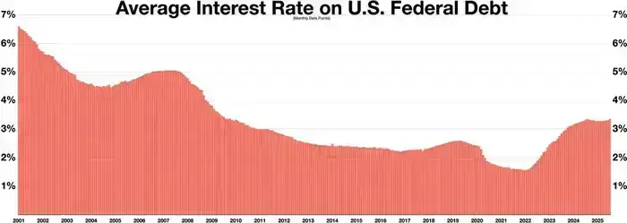
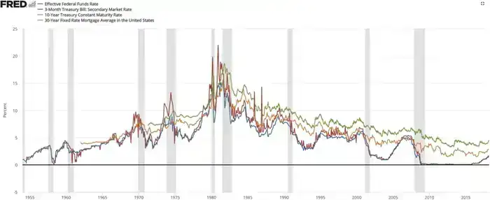
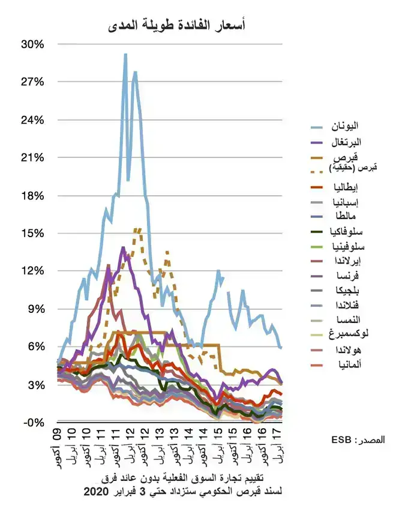

The original and the revival
Alvin Hansen coined the term in 1938, arguing that the American frontier, population growth and capital-hungry industries had all exhausted themselves, leaving an economy that could not absorb its own savings. The postwar boom made the idea look silly for forty years.
Maps, diagrams and images






Lawrence Summers revived it in a 2013 IMF speech and a 2014 paper. His version is not about exhausted investment opportunities but about a lower equilibrium real rate: an ageing population saving for retirement, rising inequality concentrating income in high-saving households, and a global shortage of safe assets.
If that rate is persistently negative, the zero lower bound on nominal rates binds, monetary policy loses room, and the economy settles into low growth, low inflation and recurring recessions that only fiscal deficits can offset.
The evidence, and the counter-evidence
Estimates of the natural rate of interest — Laubach and Williams, and the Holston–Laubach–Williams model — show a long decline across advanced economies since the 1980s. Real yields on index-linked government debt fell for three decades. Both facts are what the hypothesis predicts.
Ben Bernanke's reply is that the phenomenon is global rather than domestic: a savings glut in Asia and oil exporters, not an American investment drought, explains the same data, with different policy implications.
Then 2021–23 arrived. Inflation returned across the rich world, nominal rates rose sharply, and the zero lower bound stopped binding. Either that refutes secular stagnation or it was a temporary supply shock superimposed on a slow underlying trend — and the honest position is that the episode is too recent to distinguish them.
Well supported: the equilibrium real interest rate in advanced economies has fallen a long way since the 1980s, and estimates cluster near or below zero after inflation.
Contested: whether that is a persistent structural condition or the result of a global savings glut, a safe-asset shortage, or slow productivity growth.
Open: whether the post-2021 inflation marks the end of the regime. Long-run forecasts still expect low rates, which is a market bet rather than a finding.
The archive labels this live debate: the empirical pattern is not in doubt, the explanation is, and the policy conclusions differ sharply between the candidates.
Why it is in the archive
Because it is a case where a forgotten idea turned out to describe the data better than the consensus model, and where the mechanism is still genuinely unsettled.
Related: the great stagnation, modern monetary theory.
Sources for this page
- Wikipedia, “Secular stagnation” — Hansen, Summers and the debateen.wikipedia.org
- Summers (2014), “U.S. Economic Prospects: Secular Stagnation, Hysteresis, and the Zero Lower Bound”www.brookings.edu
- Holston, Laubach & Williams — measuring the natural rate of interestwww.frbsf.org
- Bernanke (2015), “Why are interest rates so low?” — the savings-glut replywww.brookings.edu
Open resources on this topic
- PapersOpen-access articles: DOAJ · PubMed Central · Internet Archive Scholar
- BooksPublic-domain and borrowable copies: Open Library · Project Gutenberg · Google Books · Internet Archive
Cite this page
Momin, S. (2026). Secular Stagnation. The Larger World Archive. https://drsamonline.github.io/LARGE_GLOBE/secular-stagnation.htmlMomin, Sohil. “Secular Stagnation.” The Larger World Archive, 2026, https://drsamonline.github.io/LARGE_GLOBE/secular-stagnation.html.Momin, Sohil. “Secular Stagnation.” The Larger World Archive, 2026. https://drsamonline.github.io/LARGE_GLOBE/secular-stagnation.html.@misc{secular2026secular,
author = {Momin, Sohil},
title = {Secular Stagnation},
year = {2026},
howpublished = {The Larger World Archive},
url = {https://drsamonline.github.io/LARGE_GLOBE/secular-stagnation.html},
note = {Last reviewed 20 November 2026}
}Last reviewed 20 November 2026 · Corrections policy · this page is not peer reviewed